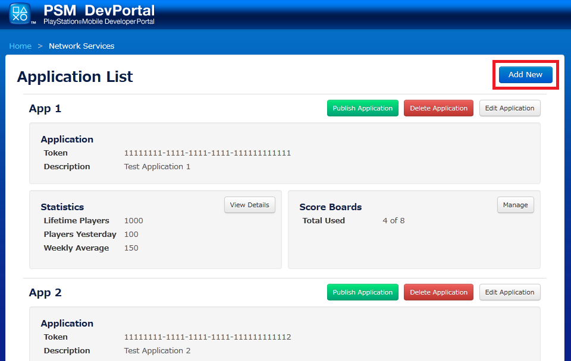
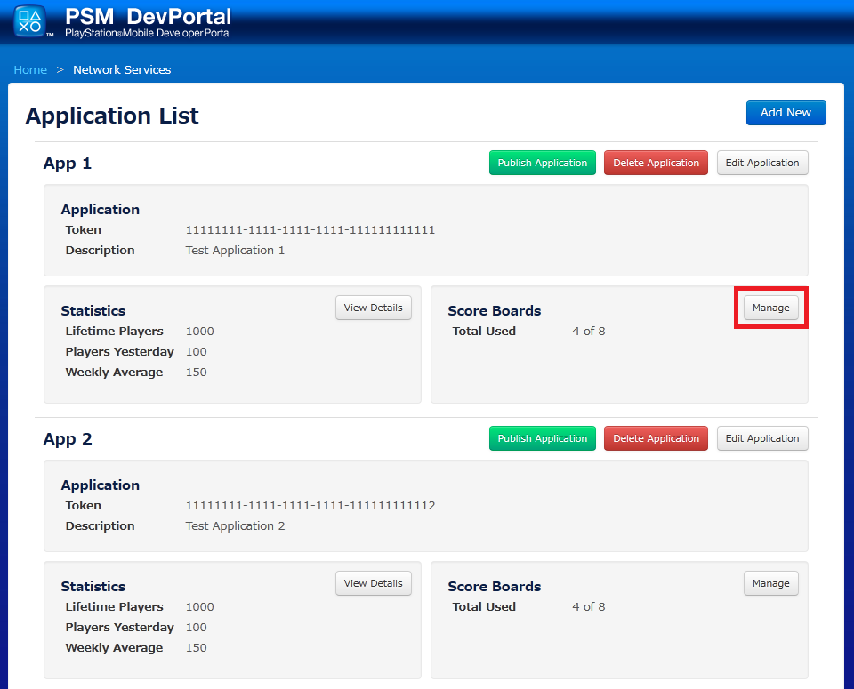
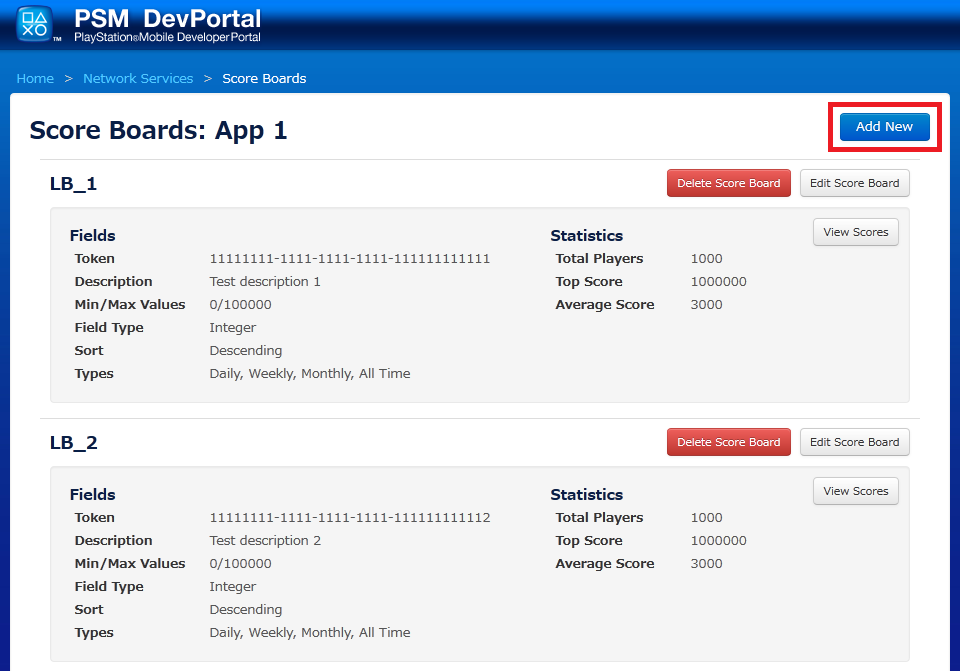

Contents
This document provides an explanation on the implementation and usage of PSM Scoreboards, which are accessible via the PSM Network API.
Scoreboards are used to display a list of the top users grouped by category for an application. Each scoreboard supports tracking scores on all-time basis, where every user is given an entry which records their best score. Additionally, at scoreboard creation time the developer may configure support for tracking scores on a daily, weekly, and monthly basis (any subset of these values is acceptable). For instance the developer can choose to keep track of only daily scores, which will result in the creation of daily and all-time scoreboard time variants for the selected scoreboard.
The Scoreboard API also exposes an endpoint for pulling friend scoreboards, which enables the user to compare themselves against a list of PlayStation(R)Network friends. Scores for friend scoreboards are pulled from the all-time scoreboards.
Up to 10 Network enabled applications can be created per PSM developer account on a yearly basis. Each application is allowed a total of 8 scoreboards (each of which supports daily, weekly, monthly, and all-time score tracking). The user is required to be logged into PSN in order for scoreboard data to be transmitted and read, and an Online ID is required for a user to be able to submit scores to a scoreboard.
The flow for creating a scoreboard is as follows:
- Login to the DevPortal at https://psm.playstation.net/portal/
- Click the "PSN Services Configuration" option.
- Add a new application by clicking the "Add New" button on the "Application List" screen.

- Click the "Manage" button on the "Scoreboard" pane.

- Add a new scoreboard by clicking the "Add New" button on the "Score Board List" screen.

Upon creation, applications and scoreboards are each assigned a unique token. These tokens are used when invoking the Scoreboard Network API, and should be placed into the application by the developer.
IMPORTANT: The application and scoreboard tokens should be treated as secret keys by the developer and not shared with anyone outside their development team.
Scores for the development environment are viewable via the DevPortal, by clicking on the "View Scores" button for a scoreboard on the "Score Board List" screen. The Portal supports the deletion of scores to enable developers to reset their test dataset.
Developers are responsible for publishing their application's via the DevPortal. An application can be published by pressing the "Publish" button for an application on the "Application List" screen. This will promote both the application and all of the application's score boards to the QA environment for final sign-off. Publishing of the application should be done at the same time with submitting the master package.
IMPORTANT: Applications and scoreboards can be freely added and removed by the developer up until the time the developer publishes an application, after which they are unable to be deleted. A subset of the application and scoreboard fields can still be altered after publishing, but this is restricted to name, description, and the min/max score range for a scoreboard. A scoreboard's field type (i.e. integer) and time variants (i.e. daily, weekly, monthly) are set at creation time and cannot be changed.
The processing of scoreboards is performed using the Network class.
- Call Network::Initialize with appToken.
- Call Network::AuthGetTicket().
- Workflow:
- Authorization credentials for the user are fetched from PSN. This results in the user being prompted to login, unless the user's login information has already been saved to the device. After a successful login the authorization credentials are sent to the PSM Network Services server for validation. Upon success, the server returns a Network Services ticket back to the application.
- After the Network Services ticket is fetched, Network.State is set to NetworkState.NetworkServicesServerReady.
- NetworkRequests can then be made against the Network Services server.
All requests and responses are in JSON format. A response parser has been provided for ease of development.
Send a "get" NetworkRequest with the following parameters and a service type of "score_board":
An application token, extracted from the DevPortal.

A set of scoreboard tokens, extracted from the DevPortal.

A set of scoreboard types.
- Valid types:
1: Daily 2: Weekly 3: Monthly 4: All-time
A limit. Valid values are integers in the range of [50-500] (optional, default 50).
An integer offset (optional).
Receive a NetworkResponse with the following parameters:
- The username of the currently logged in user.
- A list of scoreboard results. The list is in the format: [score_board_token: {time_variant: [username, score, date achieved, metadata], ...}]
- A user's rank.
- The total number of all-time scores.
Send a "set" NetworkRequest with the following parameters and a service type of "score_board".
An application token, extracted from the DevPortal.
A scoreboard token, extracted from the DevPortal.
The user's score.
A string of metadata associated with the score.
Send a "get" NetworkRequest with the following parameters and a service type of "friend_score_board".
An application token, extracted from the DevPortal.
A scoreboard token, extracted from the DevPortal.

Only one friend scoreboard may be queried at a time.
Receive a NetworkResponse with the following parameters
- The username of the currently logged in user.
- A list of scoreboard results. The list is in the format: [score_board_token: {time_variant: [username, score, date achieved, metadata], ...}]
Send a "get" NetworkRequest with the following parameters and a service type "friend_list".
Receive a NetworkResponse with the following parameters:
- The username of the currently logged in user.
- A list of PSN friends for the currently logged in user.
NetworkServer errors are returned in the response JSON.
IMPORTANT: If the device is offline when a score is transmitted, the application will receive a exception after the network send times out. For this reason it is highly recommended that the developer uses the asynchronous send to dispatch scores to the server. Furthermore, it is the responsibility of the developer to persist and retry dispatching the score to the server if an error occurs while sending. The developer can ascertain the online status of a device by checking the Network.State property of the static Network class. If the device is connected NetworkState.NetworkServicesServerReady will be returned, otherwise NetworkState.NotConnected will be returned.